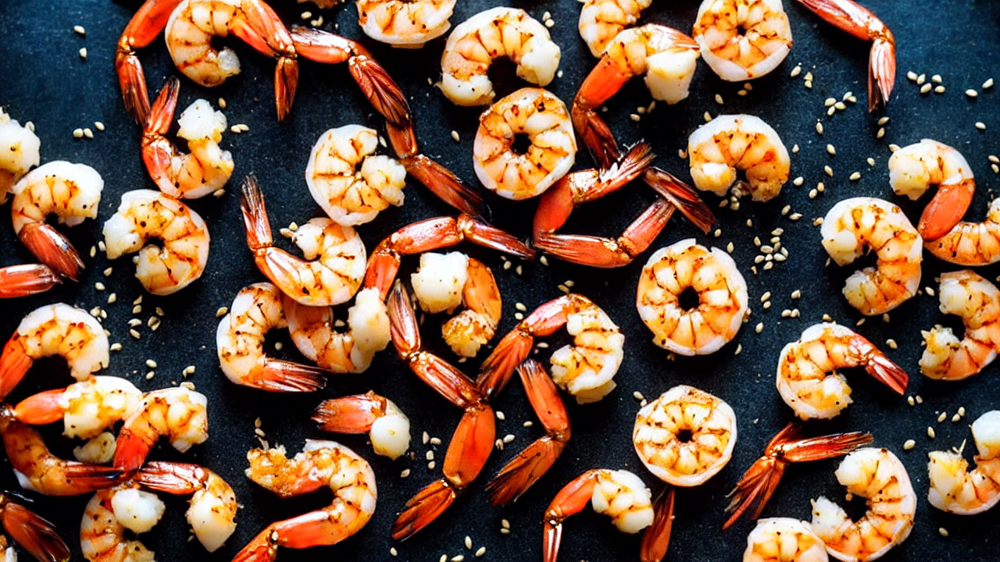
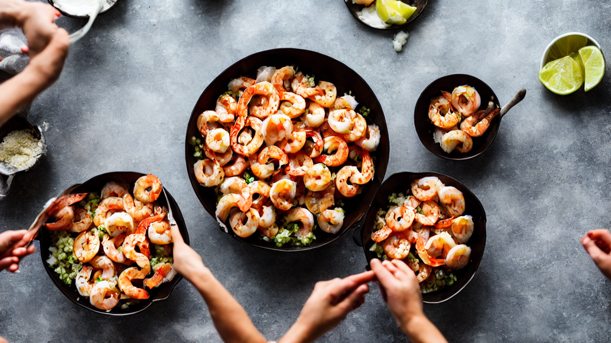
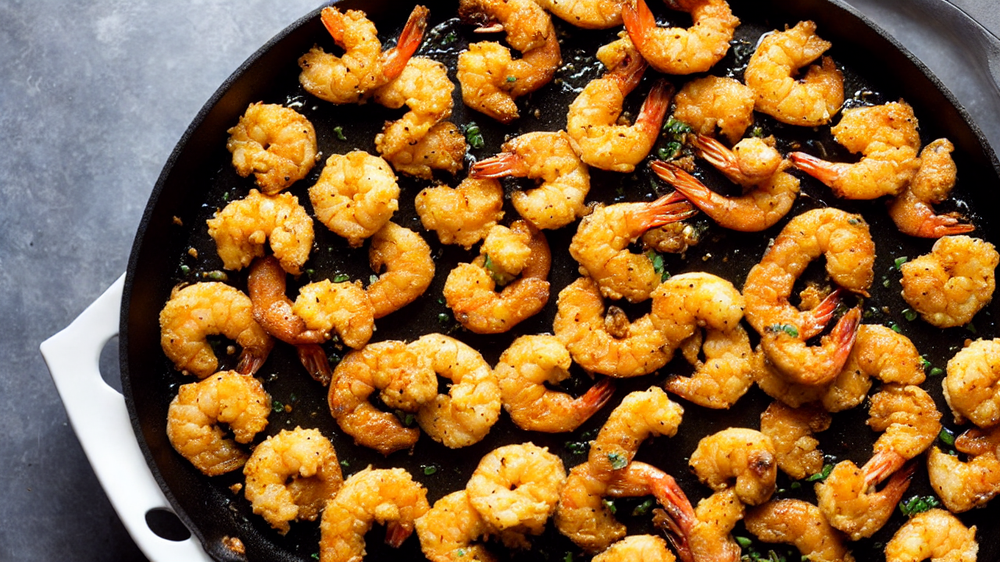
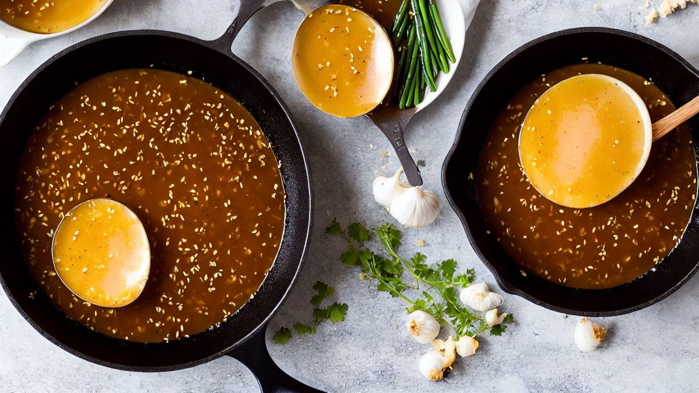
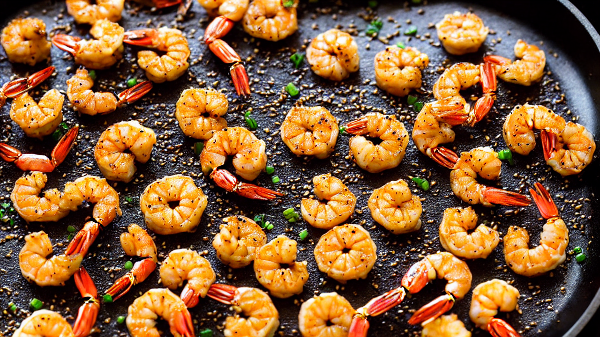
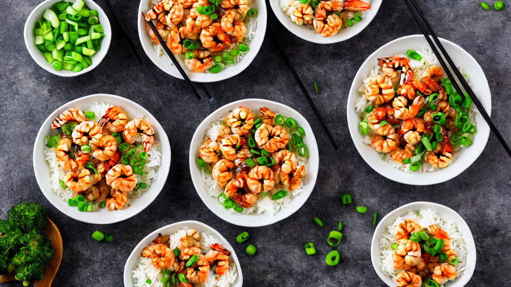

Crispy Honey Garlic Shrimp | The BEST 30-Minute Dinner!
Craving a quick and delicious dinner? This Crispy Honey Garlic Shrimp recipe is a family favorite, ready in under 30 minutes! Perfect for weeknights, these succulent shrimp are coated in a sweet and savory honey garlic sauce and are guaranteed to become a new go-to! #honeygarlicshrimp #shrimprecipe #easyrecipe #weeknightdinner #asiancuisine #seafood #quickdinner
Ingredients
- our ingredients! You'll need 1 pound of large shrimp
- peeled and deveined
- 1/4 cup of cornstarch
- 2 tablespoons of soy sauce
- 1 tablespoon of rice vinegar
- 2 cloves of garlic minced
- 1/4 cup of honey
- 1 tablespoon of sesame oil
- a pinch of red pepper flakes
Instructions

Hey food lovers! Get ready for a shrimp sensation that's unbelievably crispy, deliciously sweet, and totally addictive. We're making Crispy Honey Garlic Shrimp, and trust me, this is one recipe you'll be making again and again!

Let's gather our ingredients! You'll need 1 pound of large shrimp, peeled and deveined, 1/4 cup of cornstarch, 2 tablespoons of soy sauce, 1 tablespoon of rice vinegar, 2 cloves of garlic minced, 1/4 cup of honey, 1 tablespoon of sesame oil, and a pinch of red pepper flakes.

First, we're going to toss our shrimp with the cornstarch. This is the key to getting that amazing crispy texture! Make sure the shrimp are evenly coated – it's like giving them a little protective armor!

Now, let's heat up 1/4 inch of oil in a large skillet over medium-high heat. Once hot, carefully add the shrimp in a single layer – don't overcrowd the pan! We want them to get nice and golden brown, about 2-3 minutes per side.

Once the shrimp are crispy and cooked through, remove them from the skillet and set aside. Don’t worry if they aren't *completely* cooked, they'll finish cooking in the sauce. This helps maintain that perfect crisp!

Now for the magic sauce! In the same skillet, add the soy sauce, rice vinegar, minced garlic, honey, and sesame oil. Bring it to a simmer and let it thicken slightly, about 2-3 minutes. The aroma is incredible!

Add the crispy shrimp back into the skillet and toss to coat evenly with the honey garlic sauce. Add a pinch of red pepper flakes for a little kick – totally optional, but highly recommended! Cook for another minute, allowing the sauce to cling to the shrimp.
Time to plate it up! I love serving this Crispy Honey Garlic Shrimp over a bed of fluffy white rice or noodles. Garnish with some chopped green onions and sesame seeds for a beautiful presentation.
And there you have it – Crispy Honey Garlic Shrimp, ready in under 30 minutes! This recipe is perfect for a quick weeknight dinner or a delicious weekend treat. Don't forget to like and subscribe for more amazing recipes!